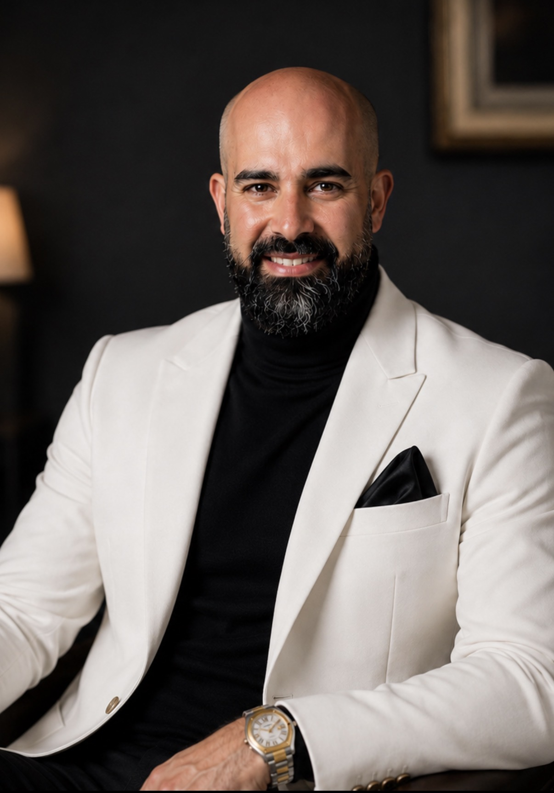

INDONESIA
Bali
Clifftop sanctuaries, private pool villas and sunset rituals.
CURATED LUXURY HOSPITALITY
Luxury Hotels • Exclusive Experiences • Curated by Hospitality Experts
FOUNDED BY BEN TAFRESHI · GLOBAL LUXURY HOSPITALITY
DESTINATIONS
Places selected through the lens of service, design, atmosphere and the details that turn a stay into a lasting memory.
Clifftop sanctuaries, private pool villas and sunset rituals.
Wellness hideaways, beach clubs and tropical residences.
Overwater privacy, ocean dining and luminous horizons.
Architectural icons, elevated dining and extraordinary city stays.
Quiet ryokans, seasonal design and deeply considered service.
Coastal lodges, urban suites and landscape-led retreats.
FEATURED HOTELS
A BENARIAN hotel is chosen for more than beauty. It must carry atmosphere, service precision, culinary depth and a genuine sense of arrival.

Dramatic cliffs, iconic dining and a world-class resort experience.
Discover →
Thoughtful wellness, intimate hospitality and authentic Balinese warmth.
Discover →
Refined suites, lush surroundings and immersive Ubud hospitality.
Discover →EXPERIENCES
Cinematic retreats selected for service, architecture and atmosphere.
Secluded residences, private pools and personal hosting.
Restorative sanctuaries where nature and stillness take priority.
Destination restaurants, private tables and culinary storytelling.
Sunset rituals, reserved cabanas and polished coastal energy.
Multigenerational journeys with comfort and thoughtful experiences.
Intimate stays and quiet luxury for milestone journeys.

ABOUT BEN
With over 20 years of international luxury hospitality experience, I created BENARIAN to connect discerning travellers with the world’s finest hotels and unforgettable experiences.
My mission is to elevate every journey through trusted recommendations, curated collections and genuine hospitality partnerships built on expertise, integrity and passion.
BENARIAN is more than a collection of places — it is a promise of excellence and unforgettable moments.

HOTEL PARTNERSHIPS
Showcase your hotel to a premium international audience through curated luxury content, destination marketing and hospitality expertise.
SOCIAL EDITORIAL


GUEST NOTES
“BENARIAN feels less like a travel site and more like a private introduction to the world’s most beautiful stays.”Sophia R. · Singapore
“Recommendations shaped by someone who truly understands luxury hospitality from the inside.”Marcus L. · London
“A refined lens on hotels, resorts and experiences — discovery feels effortless and elevated.”Amelia K. · Melbourne
PRIVATE DISPATCH
Receive luxury travel inspiration, selected hotel recommendations and partnership news.